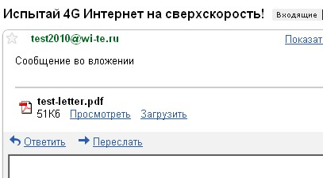
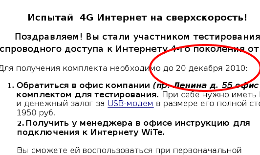

2 декабря я уже писал, что записался в очередь на тестирование появившегося в Кемерово интернета 4G
Сегодня компания Вайт немногословно уведомила меня, что мне повезло.

Чтобы воспользоваться удачей и в числе нескольких счастливчиков помочь таки компании с тестированием качества связи, согласно приложенному PDF нужно выполнить следующие условия.
Для получения комплекта необходимо до 20 декабря 2010:
1. Обратиться в офис компании (пр. Ленина д. 55 офис 202) за комплектом для тестирования. При себе нужно иметь Паспорт и денежный залог за USB-модем в размере его полной стоимости 1950 руб.
2. Получить у менеджера в офисе инструкцию для подключения к Интернету WiTe.
Вы сможете ей воспользоваться при первоначальной регистрации в сети.
3. Протестировать наш Интернет.
Вы можете тестировать услуги компании WiTe в течение 5 дней с даты подключения в сеть. Лимит по скачиванию трафика составит 5 Гбайт.
4. Сохранить чек и оригинальную упаковку оборудования.
Возврат оборудования возможен, при условии предъявления чека и сохранении оригинальной упаковки в полной комплектации.
5. Заполнить анкету по результатам тестирования на сайте вайт.рф
Заполнение анкеты - обязательное условие участника тестирования от WiTe.
Российский маркетинг беспощаден.
Займи 1950 рублей. Тестируй. Следи за лимитом. Следи за сроками. Храни упаковку. Не теряй чек. Найди на сайте и заполни анкету.
И, наконец, самое простое. Приди вчера!
